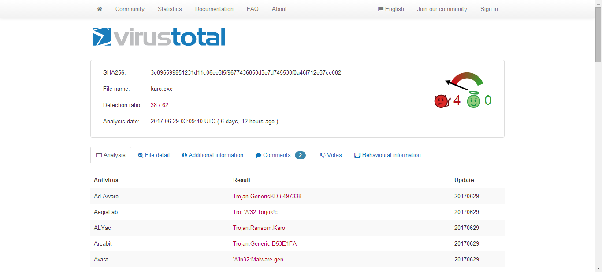
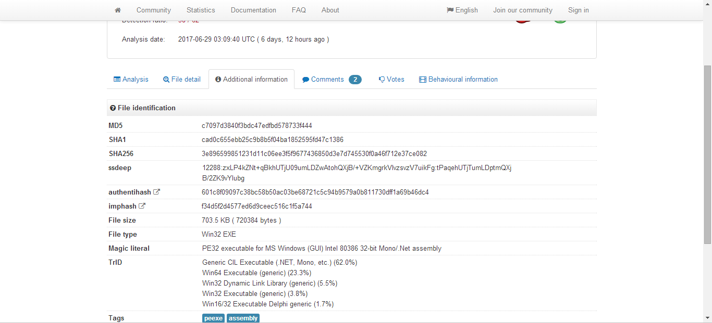
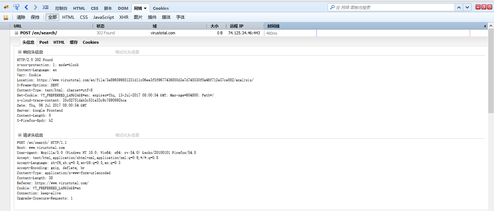
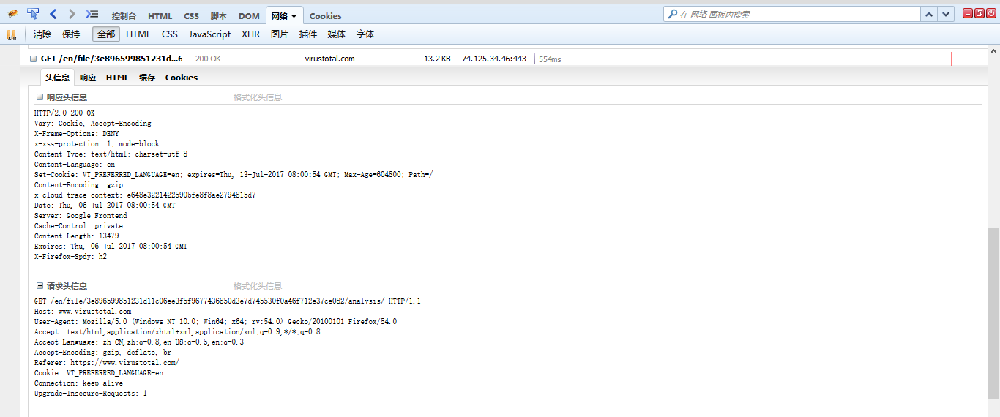

Author：wnagzihxa1n
Mail：tudouboom@163.com
VirusTotal是一个病毒检测网站，可以通过上传文件或者URL的形式来检测文件是否是病毒，如果该文件已经上传过，则直接跳转到报告界面
随便搜一个病毒文件的MD5，跳到报告页面

注意链接的形式，中间是该文件的SHA256值
https://www.virustotal.com/en/file/3e896599851231d11c06ee3f5f9677436850d3e7d745530f0a46f712e37ce082/analysis/
这个页面有整个文件的信息

如果我们现在有一个文件的SHA256，需要通过查询VirusTotal获取MD5，或者说，我们有MD5，SHA1，SHA256任意一个值，需要查询出其余两个值
依旧使用这个样本
MD5 : c7097d3840f3bdc47edfbd578733f444
SHA1 : cad0c655ebb25c9b8b5f04ba1852595fd47c1386
SHA256 : 3e896599851231d11c06ee3f5f9677436850d3e7d745530f0a46f712e37ce082
先使用SHA1进行查询，使用FireBug查看数据请求，重定向到了我们刚才看到的那个使用SHA256值的报告地址

那么我们直接访问下面这种形式的地址是可以获取到数据的
https://www.virustotal.com/en/file/{SHA256}/analysis/
而我们注意到，如果输入的是SHA1，使用的是
https://www.virustotal.com/en/search/?query=cad0c655ebb25c9b8b5f04ba1852595fd47c1386
SHA1和SHA256这一点的差异是需要注意的，在后续的脚本里需要进行区分
如果我们使用MD5进行搜索，会发生什么呢？
FireBug捕获到这是个POST请求

POST数据如下
query=c7097d3840f3bdc47edfbd578733f444
无论是MD5，SHA1还是SHA256，最后都会调用GET方法请求那个带SHA256值的URL

MD5使用的是POST的方法，SHA1使用的是GET的方法去查询
在搞清楚这三种查询的区别后，开始写代码自动化的去查询
# coding = utf-8
import requests
import re
import sys
reload(sys)
sys.setdefaultencoding('utf-8')
VT_MD5_URL = 'https://www.virustotal.com/en/search/'
VT_SHA1_URL = 'https://www.virustotal.com/en/search/?query='
VT_SHA256_URL = 'https://www.virustotal.com/en/file/'
MD5 = 'c7097d3840f3bdc47edfbd578733f444'
SHA1 = 'cad0c655ebb25c9b8b5f04ba1852595fd47c1386'
SHA256 = '3e896599851231d11c06ee3f5f9677436850d3e7d745530f0a46f712e37ce082'
MD5_header = {
'Host': 'www.virustotal.com',
'User-Agent': 'Mozilla/5.0 (Windows NT 10.0; Win64; x64; rv:54.0) Gecko/20100101 Firefox/54.0',
'Accept': 'text/html,application/xhtml+xml,application/xml;q=0.9,*/*;q=0.8',
'Accept-Language': 'zh-CN,zh;q=0.8,en-US;q=0.5,en;q=0.3',
'Accept-Encoding': 'gzip, deflate, br',
'Content-Type': 'application/x-www-form-urlencoded',
'Content-Length': '38',
'Referer': 'https://www.virustotal.com/',
'Cookie': 'VT_PREFERRED_LANGUAGE=en',
'Connection': 'keep-alive',
'Upgrade-Insecure-Requests': '1'
}
SHA1_header = {
'Host' : 'www.virustotal.com',
'User-Agent' : 'Mozilla/5.0 (Windows NT 10.0; Win64; x64; rv:54.0) Gecko/20100101 Firefox/54.0',
'Accept' : 'text/html,application/xhtml+xml,application/xml;q=0.9,*/*;q=0.8',
'Accept-Language' : 'zh-CN,zh;q=0.8,en-US;q=0.5,en;q=0.3',
'Accept-Encoding' : 'gzip, deflate, br',
'Cookie' : 'VT_PREFERRED_LANGUAGE=en',
'Connection' : 'keep-alive',
'Upgrade-Insecure-Requests' : '1'
}
SHA256_header = {
'Host' : 'www.virustotal.com',
'User-Agent' : 'Mozilla/5.0 (Windows NT 10.0; Win64; x64; rv:54.0) Gecko/20100101 Firefox/54.0',
'Accept' : 'text/html,application/xhtml+xml,application/xml;q=0.9,*/*;q=0.8',
'Accept-Language' : 'zh-CN,zh;q=0.8,en-US;q=0.5,en;q=0.3',
'Accept-Encoding' : 'gzip, deflate, br',
'Cookie' : 'VT_PREFERRED_LANGUAGE=en',
'Connection' : 'keep-alive',
'Upgrade-Insecure-Requests' : '1'
}
def main():
data = {
'query' : MD5
}
response = requests.post(url=VT_MD5_URL, data=data, headers = MD5_header)
print response.status_code
md5 = re.findall(r'MD5</span> (.*?)\n</div>', str(response.text))
sha1 = re.findall(r'SHA1</span> (.*?)\n</div>', str(response.text))
sha256 = re.findall(r'SHA256</span> (.*?)\n</div>', str(response.text))
print md5, sha1, sha256
response = requests.get(url=VT_SHA1_URL + SHA1, headers = SHA1_header)
print response.status_code
md5 = re.findall(r'MD5</span> (.*?)\n</div>', str(response.text))
sha1 = re.findall(r'SHA1</span> (.*?)\n</div>', str(response.text))
sha256 = re.findall(r'SHA256</span> (.*?)\n</div>', str(response.text))
print md5, sha1, sha256
response = requests.get(url=VT_SHA256_URL + SHA256 + '/analysis/', headers = SHA256_header)
print response.status_code
md5 = re.findall(r'MD5</span> (.*?)\n</div>', str(response.text))
sha1 = re.findall(r'SHA1</span> (.*?)\n</div>', str(response.text))
sha256 = re.findall(r'SHA256</span> (.*?)\n</div>', str(response.text))
print md5, sha1, sha256
if __name__ == '__main__':
main()
运行输出，可以看到查询到的数据是一样的
PS C:\Users\wangz\Desktop> python .\VTSearch_by_SHA.py
200
['c7097d3840f3bdc47edfbd578733f444'] ['cad0c655ebb25c9b8b5f04ba1852595fd47c1386'] ['3e896599851231d11c06ee3f5f9677436850d3e7d745530f0a46f712e37ce082']
200
['c7097d3840f3bdc47edfbd578733f444'] ['cad0c655ebb25c9b8b5f04ba1852595fd47c1386'] ['3e896599851231d11c06ee3f5f9677436850d3e7d745530f0a46f712e37ce082']
200
['c7097d3840f3bdc47edfbd578733f444'] ['cad0c655ebb25c9b8b5f04ba1852595fd47c1386'] ['3e896599851231d11c06ee3f5f9677436850d3e7d745530f0a46f712e37ce082']
如果有同学跟着尝试的，要注意，VirusTotal有反爬虫机制，第一次可以访问，第二次直接就是403，比如
PS C:\Users\wangz\Desktop> python .\VTSearch_by_SHA.py
403
[] [] []
403
[] [] []
403
[] [] []
另外，天朝访问VirusTotal需要梯子，梯子万一不够稳。。。。。。
假如给的是一个文本文件，里面是各种MD5，SHA1和SHA256的混合数据
这时候就需要使用循环进行读取并且判断数据长度，MD5是32位，SHA1是40位，SHA256是64位
# coding = utf-8
import requests
import re
import sys
reload(sys)
sys.setdefaultencoding('utf-8')
VT_MD5_URL = 'https://www.virustotal.com/en/search/'
VT_SHA1_URL = 'https://www.virustotal.com/en/search/?query='
VT_SHA256_URL = 'https://www.virustotal.com/en/file/'
MD5 = 'c7097d3840f3bdc47edfbd578733f444'
SHA1 = 'cad0c655ebb25c9b8b5f04ba1852595fd47c1386'
SHA256 = '3e896599851231d11c06ee3f5f9677436850d3e7d745530f0a46f712e37ce082'
MD5_header = {
'Host': 'www.virustotal.com',
'User-Agent': 'Mozilla/5.0 (Windows NT 10.0; Win64; x64; rv:54.0) Gecko/20100101 Firefox/54.0',
'Accept': 'text/html,application/xhtml+xml,application/xml;q=0.9,*/*;q=0.8',
'Accept-Language': 'zh-CN,zh;q=0.8,en-US;q=0.5,en;q=0.3',
'Accept-Encoding': 'gzip, deflate, br',
'Content-Type': 'application/x-www-form-urlencoded',
'Content-Length': '38',
'Referer': 'https://www.virustotal.com/',
'Cookie': 'VT_PREFERRED_LANGUAGE=en',
'Connection': 'keep-alive',
'Upgrade-Insecure-Requests': '1'
}
SHA1_header = {
'Host' : 'www.virustotal.com',
'User-Agent' : 'Mozilla/5.0 (Windows NT 10.0; Win64; x64; rv:54.0) Gecko/20100101 Firefox/54.0',
'Accept' : 'text/html,application/xhtml+xml,application/xml;q=0.9,*/*;q=0.8',
'Accept-Language' : 'zh-CN,zh;q=0.8,en-US;q=0.5,en;q=0.3',
'Accept-Encoding' : 'gzip, deflate, br',
'Cookie' : 'VT_PREFERRED_LANGUAGE=en',
'Connection' : 'keep-alive',
'Upgrade-Insecure-Requests' : '1'
}
SHA256_header = {
'Host' : 'www.virustotal.com',
'User-Agent' : 'Mozilla/5.0 (Windows NT 10.0; Win64; x64; rv:54.0) Gecko/20100101 Firefox/54.0',
'Accept' : 'text/html,application/xhtml+xml,application/xml;q=0.9,*/*;q=0.8',
'Accept-Language' : 'zh-CN,zh;q=0.8,en-US;q=0.5,en;q=0.3',
'Accept-Encoding' : 'gzip, deflate, br',
'Cookie' : 'VT_PREFERRED_LANGUAGE=en',
'Connection' : 'keep-alive',
'Upgrade-Insecure-Requests' : '1'
}
def main():
f = open('source.txt', 'r')
try:
while True:
line = f.readline()
print line.strip(), len(line.strip())
if line and len(line.strip()) == 64:
response = requests.get(url=VT_SHA256_URL + line.strip() + '/analysis/', headers = SHA256_header)
elif line and len(line.strip()) == 40:
response = requests.get(url=VT_SHA1_URL + line.strip(), headers = SHA1_header)
elif line and len(line.strip()) == 32:
data = {
'query' : line.strip()
}
response = requests.post(url=VT_MD5_URL, data=data, headers = MD5_header)
else:
break
md5 = re.findall(r'MD5</span> (.*?)\n</div>', str(response.text))
sha1 = re.findall(r'SHA1</span> (.*?)\n</div>', str(response.text))
sha256 = re.findall(r'SHA256</span> (.*?)\n</div>', str(response.text))
print md5, sha1, sha256
except IOError, error:
print "Caught error : " + error.message
finally:
f.close()
if __name__ == '__main__':
main()
冒着生命危险测一波，果然测着测着又被拉黑了，最后那个是SHA1
PS C:\Users\wangz\Desktop> python .\VTSearch_by_SHA.py
3e896599851231d11c06ee3f5f9677436850d3e7d745530f0a46f712e37ce082 64
['c7097d3840f3bdc47edfbd578733f444'] ['cad0c655ebb25c9b8b5f04ba1852595fd47c1386'] ['3e896599851231d11c06ee3f5f9677436850d3e7d745530f0a46f712e37ce082']
73c624e4cb189d6622b4fd59c9fda43e688dba4929a1ed50f5090d0126ee7bbc 64
['0832dfe25c5b4aa25b07181a6f7d23bf'] ['d2e712fd1d20445b4bb1b279f79e8914b9eb2de9'] ['73c624e4cb189d6622b4fd59c9fda43e688dba4929a1ed50f5090d0126ee7bbc']
25a25466d3a90c26f463e2a0fcb131b9a0d077e16b2ca451c321d47758439886 64
['9eccf613bd401250d87eb9f86a18ef4a'] ['17b30e209dc18013591bd1bf9fd8997393b3615d'] ['25a25466d3a90c26f463e2a0fcb131b9a0d077e16b2ca451c321d47758439886']
80d450ca5b01a086806855356611405b2c87b3822c0c1c38a118bca57d87c410 64
['cd671a726a8498a8fd70c6c76069fb54'] ['6b2e2ff345e0001a047d461e8a91ee34b3693617'] ['80d450ca5b01a086806855356611405b2c87b3822c0c1c38a118bca57d87c410']
46a9ac069c20c505e6bc5fcd6de9a0f1d3a8ed3073133913e57d54604a0e8e8e 64
['e9a99f7b2ac4a8aceed2c3a9fcb78eb8'] ['2155c20483528377b5e3fde004bb604198463d29'] ['46a9ac069c20c505e6bc5fcd6de9a0f1d3a8ed3073133913e57d54604a0e8e8e']
6b2e2ff345e0001a047d461e8a91ee34b3693617 40
[] [] []
想着这样动不动就拉黑也不是办法啊，发现官方有对个人开放的API接口
需要先注册，然后点击右上角有一个API KEY
https://www.virustotal.com/en/user/wnagzihxa1n/apikey/
不过这个实用性感觉有点低，一分钟四次查询。。。。。。喵喵喵？？？？？？
The following table is a summary your API key's properties.
Parameter Setting
Privileges public key
Request rate 4 requests/minute
Daily quota 5760 requests/day
Monthly quota 178560 requests/month
Status Key enabled
可以看到一个文档，通俗易懂
https://www.virustotal.com/en/documentation/public-api/
文档开始的地方有一个目录
Audience
Getting started
Response basics
Sending and scanning files
Rescanning already submitted files
Retrieving file scan reports
Sending and scanning URLs
Retrieving URL scan reports
Retrieving IP address reports (includes Passive DNS)
Retrieving domain reports (includes Passive DNS)
Making comments on files and URLs
Scripts to interact with the public API
Audience
我们关注这个Retrieving file scan reports
Retrieving file scan reports
In order to retrieve a scan report on a given file you must perform an HTTP POST request to the following URL:
https://www.virustotal.com/vtapi/v2/file/report
With the following two HTTP POST parameters:
resource: a md5/sha1/sha256 hash will retrieve the most recent report on a given sample. You may also specify a scan_id (sha256-timestamp as returned by the file upload API) to access a specific report. You can also specify a CSV list made up of a combination of hashes and scan_ids (up to 4 items with the standard request rate), this allows you to perform a batch request with one single call.
apikey: your API key.
Example Code:
Python requests
import requests
params = {'apikey': '-YOUR API KEY HERE-', 'resource': '7657fcb7d772448a6d8504e4b20168b8'}
headers = {
"Accept-Encoding": "gzip, deflate",
"User-Agent" : "gzip, My Python requests library example client or username"
}
response = requests.get('https://www.virustotal.com/vtapi/v2/file/report',
params=params, headers=headers)
json_response = response.json()
cURL
curl -v --request POST \
--url 'https://www.virustotal.com/vtapi/v2/file/report' \
-d apikey=${VT_API_KEY} \
-d 'resource=7657fcb7d772448a6d8504e4b20168b8'
PHP
$post = array('apikey' => 'YOUR_API_KEY','resource'=>'99017f6eebbac24f351415dd410d522d');
$ch = curl_init();
curl_setopt($ch, CURLOPT_URL, 'https://www.virustotal.com/vtapi/v2/file/report');
curl_setopt($ch, CURLOPT_POST,1);
curl_setopt($ch, CURLOPT_ENCODING, 'gzip,deflate'); // please compress data
curl_setopt($ch, CURLOPT_USERAGENT, "gzip, My php curl client");
curl_setopt($ch, CURLOPT_VERBOSE, 1); // remove this if your not debugging
curl_setopt($ch, CURLOPT_RETURNTRANSFER ,true);
curl_setopt($ch, CURLOPT_POSTFIELDS, $post);
$result = curl_exec ($ch);
$status_code = curl_getinfo($ch, CURLINFO_HTTP_CODE);
print("status = $status_code\n");
if ($status_code == 200) { // OK
$js = json_decode($result, true);
print_r($js);
} else { // Error occured
print($result);
}
curl_close ($ch);
Example response:
{
'response_code': 1,
'verbose_msg': 'Scan finished, scan information embedded in this object',
'resource': '99017f6eebbac24f351415dd410d522d',
'scan_id': '52d3df0ed60c46f336c131bf2ca454f73bafdc4b04dfa2aea80746f5ba9e6d1c-1273894724',
'md5': '99017f6eebbac24f351415dd410d522d',
'sha1': '4d1740485713a2ab3a4f5822a01f645fe8387f92',
'sha256': '52d3df0ed60c46f336c131bf2ca454f73bafdc4b04dfa2aea80746f5ba9e6d1c',
'scan_date': '2010-05-15 03:38:44',
'positives': 40,
'total': 40,
'scans': {
'nProtect': {'detected': true, 'version': '2010-05-14.01', 'result': 'Trojan.Generic.3611249', 'update': '20100514'},
'CAT-QuickHeal': {'detected': true, 'version': '10.00', 'result': 'Trojan.VB.acgy', 'update': '20100514'},
'McAfee': {'detected': true, 'version': '5.400.0.1158', 'result': 'Generic.dx!rkx', 'update': '20100515'},
'TheHacker': {'detected': true, 'version': '6.5.2.0.280', 'result': 'Trojan/VB.gen', 'update': '20100514'},
.
.
.
'VirusBuster': {'detected': true, 'version': '5.0.27.0', 'result': 'Trojan.VB.JFDE', 'update': '20100514'},
'NOD32': {'detected': true, 'version': '5115', 'result': 'a variant of Win32/Qhost.NTY', 'update': '20100514'},
'F-Prot': {'detected': false, 'version': '4.5.1.85', 'result': null, 'update': '20100514'},
'Symantec': {'detected': true, 'version': '20101.1.0.89', 'result': 'Trojan.KillAV', 'update': '20100515'},
'Norman': {'detected': true, 'version': '6.04.12', 'result': 'W32/Smalltroj.YFHZ', 'update': '20100514'},
'TrendMicro-HouseCall': {'detected': true, 'version': '9.120.0.1004', 'result': 'TROJ_VB.JVJ', 'update': '20100515'},
'Avast': {'detected': true, 'version': '4.8.1351.0', 'result': 'Win32:Malware-gen', 'update': '20100514'},
'eSafe': {'detected': true, 'version': '7.0.17.0', 'result': 'Win32.TRVB.Acgy', 'update': '20100513'}
},
'permalink': 'https://www.virustotal.com/file/52d3df0ed60c46f336c131bf2ca454f73bafdc4b04dfa2aea80746f5ba9e6d1c/analysis/1273894724/'
}
If you are interested in the additional information included in web reports (file analysis tools like Portable Executable properties, ExifTool information, file signing information, etc.) then you should consider the private API.
这里我们选择Python，先尝试访问一个
#coding : utf-8
import requests
import json
import time
def main():
headers = {
"Accept-Encoding" : "gzip, deflate",
"User-Agent" : "gzip, My Python requests library example client or username"
}
params = {
'apikey' : '1d3d1aa5f94755d8051973c95ab46d2b5f521c7966a93014b69adc559efc6c60',
'resource' : line
}
response = requests.get('https://www.virustotal.com/vtapi/v2/file/report', params=params, headers=headers)
if response.text != '':
print response.text
if __name__ == '__main__':
main()
返回的是JSON格式的数据，中间是各种杀毒引擎的查杀结果
{
u'scan_id': u'54bc950d46a0d1aa72048a17c8275743209e6c17bdacfc4cb9601c9ce3ec9a71-1499297341',
u'sha1': u'84c7201f7e59cb416280fd69a2e7f2e349ec8242',
u'resource': u'7657fcb7d772448a6d8504e4b20168b8',
u'response_code': 1,
u'scan_date': u'2017-07-05 23:29:01',
u'permalink': u'https://www.virustotal.com/file/54bc950d46a0d1aa72048a17c8275743209e6c17bdacfc4cb9601c9ce3ec9a71/analysis/1499297341/',
u'verbose_msg': u'Scan finished, information embedded',
u'sha256': u'54bc950d46a0d1aa72048a17c8275743209e6c17bdacfc4cb9601c9ce3ec9a71',
u'positives': 62,
u'total': 63,
u'md5': u'7657fcb7d772448a6d8504e4b20168b8',
u'scans': {
u'Bkav': {u'detected': True, u'version': u'1.3.0.9188', u'result': u'W32.ZeustrackerZS.Trojan', u'update': u'20170705'},
u'MicroWorld-eScan': {u'detected': True, u'version': u'12.0.250.0', u'result': u'Gen:Variant.Kazy.8782', u'update': u'20170705'},
u'nProtect': {u'detected': True, u'version': u'2017-07-05.02', u'result': u'Trojan-Spy/W32.ZBot.109056.AR', u'update': u'20170705'},
u'CMC': {u'detected': True, u'version': u'1.1.0.977', u'result': u'Trojan.Win32.Lebag!O', u'update': u'20170705'},
u'CAT-QuickHeal': {u'detected': True, u'version': u'14.00', u'result': u'Trojan.Ramnit.A', u'update': u'20170705'},
u'ALYac': {u'detected': True, u'version': u'1.0.1.9', u'result': u'Gen:Variant.Kazy.8782', u'update': u'20170705'},
u'Malwarebytes': {u'detected': True, u'version': u'2.1.1.1115', u'result': u'Spyware.Zbot', u'update': u'20170705'},
u'VIPRE': {u'detected': True, u'version': u'59322', u'result': u'Trojan.Win32.Generic!BT', u'update': u'20170705'},
u'TheHacker': {u'detected': True, u'version': u'6.8.0.5.1699', u'result': u'Trojan/Lebag.agu', u'update': u'20170704'},
u'K7GW': {u'detected': True, u'version': u'10.17.23885', u'result': u'Riskware ( 0015e4f11 )', u'update': u'20170706'},
u'K7AntiVirus': {u'detected': True, u'version': u'10.17.23885', u'result': u'Riskware ( 0015e4f11 )', u'update': u'20170705'},
u'Invincea': {u'detected': True, u'version': u'6.3.0.25415', u'result': u'heuristic', u'update': u'20170607'},
u'Baidu': {u'detected': True, u'version': u'1.0.0.2', u'result': u'Win32.Worm.Autorun.f', u'update': u'20170705'},
u'F-Prot': {u'detected': True, u'version': u'4.7.1.166', u'result': u'W32/Ramnit.K.gen!Eldorado', u'update': u'20170705'},
u'Symantec': {u'detected': True, u'version': u'1.4.0.0', u'result': u'W32.Ramnit', u'update': u'20170705'},
u'TotalDefense': {u'detected': True, u'version': u'37.1.62.1', u'result': u'Win32/Ramnit.B!Dropper', u'update': u'20170705'},
u'TrendMicro-HouseCall': {u'detected': True, u'version': u'9.900.0.1004', u'result': u'TSPY_ZBOT.SMHA', u'update': u'20170705'},
u'Avast': {u'detected': True, u'version': u'8.0.1489.320', u'result': u'Win32:Kryptik-JOV [Trj]', u'update': u'20170705'},
u'ClamAV': {u'detected': True, u'version': u'0.99.2.0', u'result': u'Win.Trojan.Ramnit-7847', u'update': u'20170705'},
u'Kaspersky': {u'detected': True, u'version': u'15.0.1.13', u'result': u'Worm.Win32.Autorun.icp', u'update': u'20170705'},
u'BitDefender': {u'detected': True, u'version': u'7.2', u'result': u'Gen:Variant.Kazy.8782',u'update': u'20170705'},
u'NANO-Antivirus': {u'detected': True, u'version': u'1.0.76.17587', u'result': u'Trojan.Win32.DownLoad2.csmmu', u'update': u'20170705'},
u'ViRobot': {u'detected': True, u'version': u'2014.3.20.0', u'result': u'Trojan.Win32.Agent.109056.CR', u'update': u'20170705'},
u'AegisLab': {u'detected': True, u'version': u'4.2', u'result': u'Troj.W32.Generic!c', u'update': u'20170705'},
u'Rising': {u'detected': True, u'version': u'25.0.0.1', u'result': u'Trojan.Generic (cloud:jvT7loq39sE)', u'update': u'20170705'},
u'Ad-Aware': {u'detected': True, u'version': u'3.0.3.1010', u'result': u'Gen:Variant.Kazy.8782', u'update': u'20170705'},
u'Sophos': {u'detected': True, u'version': u'4.98.0', u'result': u'Troj/ZXC-G', u'update': u'20170705'},
u'Comodo': {u'detected': True, u'version': u'27403', u'result': u'TrojWare.Win32.Kryptik.KLV', u'update': u'20170705'},
u'F-Secure': {u'detected': True, u'version': u'11.0.19100.45', u'result': u'Gen:Variant.Kazy.8782', u'update': u'20170705'},
u'DrWeb': {u'detected': True, u'version': u'7.0.28.2020', u'result': u'Win32.HLLW.Tazebama.235', u'update': u'20170705'},
u'Zillya': {u'detected': True, u'version': u'2.0.0.3328', u'result': u'Trojan.Zbot.Win32.81569', u'update': u'20170705'},
u'TrendMicro': {u'detected': True, u'version': u'9.740.0.1012', u'result': u'TSPY_ZBOT.SMHA', u'update': u'20170705'},
u'McAfee-GW-Edition': {u'detected': True, u'version': u'v2015', u'result': u'BehavesLike.Win32.PWSZbot.ch', u'update': u'20170705'},
u'Emsisoft': {u'detected': True, u'version': u'4.0.1.883', u'result': u'Gen:Variant.Kazy.8782 (B)', u'update': u'20170705'},
u'Ikarus': {u'detected': True, u'version': u'0.1.5.2', u'result': u'Virus.Win32.Virtob', u'update': u'20170705'},
u'Cyren': {u'detected': True, u'version': u'5.4.30.7', u'result': u'W32/Ramnit.K.gen!Eldorado', u'update': u'20170705'},
u'Jiangmin': {u'detected': True, u'version': u'16.0.100', u'result': u'Trojan/Generic.dkmt', u'update': u'20170705'},
u'Webroot': {u'detected': True, u'version': u'1.0.0.207', u'result': u'Trojan:Win32/Eyestye.H', u'update': u'20170706'},
u'Avira': {u'detected': True, u'version': u'8.3.3.4', u'result': u'TR/Drop.Liks.A', u'update': u'20170705'},
u'Fortinet': {u'detected': True, u'version': u'5.4.247.0', u'result': u'W32/Kryptik.KLV!tr', u'update': u'20170629'},
u'Antiy-AVL': {u'detected': True, u'version': u'3.0.0.1', u'result': u'Worm/Win32.Autorun.icp', u'update': u'20170705'},
u'Kingsoft': {u'detected': True, u'version': u'2013.8.14.323', u'result': u'Win32.Troj.Undef.(kcloud)', u'update': u'20170706'},
u'Endgame': {u'detected': True, u'version': u'0.7.3', u'result': u'malicious (high confidence)', u'update': u'20170629'},
u'Arcabit': {u'detected': True, u'version': u'1.0.0.817', u'result': u'Trojan.Kazy.D224E', u'update': u'20170705'},
u'SUPERAntiSpyware': {u'detected': True, u'version': u'5.6.0.1032', u'result': u'Trojan.Agent/Gen-FakeSecurity', u'update': u'20170706'},
u'ZoneAlarm': {u'detected': True, u'version': u'1.0', u'result': u'Worm.Win32.Autorun.icp', u'update': u'20170705'},
u'Microsoft': {u'detected': True, u'version': u'1.1.13903.0', u'result': u'Trojan:Win32/Ramnit', u'update': u'20170705'},
u'AhnLab-V3': {u'detected': True, u'version': u'3.9.1.17914', u'result': u'Trojan/Win32.Zbot.R19508', u'update': u'20170705'},
u'McAfee': {u'detected': True, u'version': u'6.0.6.653', u'result': u'PWS-Zbot.gen.cy', u'update': u'20170706'},
u'AVware': {u'detected': True, u'version': u'1.5.0.42', u'result': u'Trojan.Win32.Generic!BT', u'update': u'20170705'},
u'MAX': {u'detected': False, u'version': u'2017.6.26.1', u'result': None, u'update': u'20170705'},
u'VBA32': {u'detected': True, u'version': u'3.12.26.4', u'result': u'Worm.AutoRun', u'update': u'20170705'},
u'Panda': {u'detected': True, u'version': u'4.6.4.2', u'result': u'Trj/Ramnit.F', u'update': u'20170705'},
u'Zoner': {u'detected': True, u'version': u'1.0', u'result': u'Win32.Ramnit.A', u'update': u'20170705'},
u'ESET-NOD32': {u'detected': True, u'version': u'15699', u'result': u'Win32/Ramnit.A', u'update': u'20170705'},
u'Tencent': {u'detected': True, u'version': u'1.0.0.1', u'result': u'Win32.Virus.Ramnit.Agux', u'update': u'20170706'},
u'Yandex': {u'detected': True, u'version': u'5.5.1.3', u'result': u'Trojan.Ramnit!cLbJ7UZPdfE', u'update': u'20170705'},
u'SentinelOne': {u'detected': True, u'version': u'1.0.0.12', u'result': u'static engine - malicious', u'update': u'20170516'},
u'GData': {u'detected': True, u'version': u'A:25.13240B:25.9933', u'result': u'Gen:Variant.Kazy.8782', u'update': u'20170706'},
u'AVG': {u'detected': True, u'version': u'8.0.1489.320', u'result': u'Win32:Kryptik-JOV [Trj]', u'update': u'20170705'},
u'Paloalto': {u'detected': True, u'version': u'1.0', u'result': u'generic.ml', u'update': u'20170706'},
u'CrowdStrike': {u'detected': True, u'version': u'1.0', u'result': u'malicious_confidence_100% (W)', u'update': u'20170420'},
u'Qihoo-360': {u'detected': True, u'version': u'1.0.0.1120', u'result': u'Win32/Trojan.544', u'update': u'20170706'}
}
}
需要注意的是一分钟只能请求四次，如果一分钟超过四次，后面的就会返回空，所以四次之后就需要睡眠60秒
#coding : utf-8
import requests
import json
import time
def main():
headers = {
"Accept-Encoding" : "gzip, deflate",
"User-Agent" : "gzip, My Python requests library example client or username"
}
f = open('source.txt', 'r')
searchCount = 0
while True:
line = f.readline().strip()
params = {
'apikey' : '1d3d1aa5f94755d8051973c95ab46d2b5f521c7966a93014b69adc559efc6c60',
'resource' : line
}
if line and (len(line) == 64 or len(line) == 40 or len(line) == 32):
searchCount = searchCount + 1
response = requests.get('https://www.virustotal.com/vtapi/v2/file/report', params=params, headers=headers)
if response.text != '':
data = json.loads(response.text)
print data['sha1'], data['sha256'], data['md5']
elif line:
print 'FBI warning : {' + line + '} not belongs to MD5/SHA1/SHA256'
else:
break
if searchCount % 4 == 0:
time.sleep(60)
f.close()
if __name__ == '__main__':
main()
测试的数据源
3e896599851231d11c06ee3f5f9677436850d3e7d745530f0a46f712e37ce082
6b2e2ff345e0001a047d461e8a91ee34b3693617
7657fcb7d772448a6d8504e4b20168b8
跑一波
PS C:\Users\wangz\Desktop> python .\VTSearch_by_SHA_API.py
cad0c655ebb25c9b8b5f04ba1852595fd47c1386 3e896599851231d11c06ee3f5f9677436850d3e7d745530f0a46f712e37ce082 c7097d3840f3bdc47edfbd578733f444
6b2e2ff345e0001a047d461e8a91ee34b3693617 80d450ca5b01a086806855356611405b2c87b3822c0c1c38a118bca57d87c410 cd671a726a8498a8fd70c6c76069fb54
84c7201f7e59cb416280fd69a2e7f2e349ec8242 54bc950d46a0d1aa72048a17c8275743209e6c17bdacfc4cb9601c9ce3ec9a71 7657fcb7d772448a6d8504e4b20168b8
如果一分钟超过四次，返回的就是空
PS C:\Users\wangz\Desktop> python .\VTSearch_by_SHA_API.py
cad0c655ebb25c9b8b5f04ba1852595fd47c1386 3e896599851231d11c06ee3f5f9677436850d3e7d745530f0a46f712e37ce082 c7097d3840f3bdc47edfbd578733f444
d2e712fd1d20445b4bb1b279f79e8914b9eb2de9 73c624e4cb189d6622b4fd59c9fda43e688dba4929a1ed50f5090d0126ee7bbc 0832dfe25c5b4aa25b07181a6f7d23bf
17b30e209dc18013591bd1bf9fd8997393b3615d 25a25466d3a90c26f463e2a0fcb131b9a0d077e16b2ca451c321d47758439886 9eccf613bd401250d87eb9f86a18ef4a
6b2e2ff345e0001a047d461e8a91ee34b3693617 80d450ca5b01a086806855356611405b2c87b3822c0c1c38a118bca57d87c410 cd671a726a8498a8fd70c6c76069fb54
Traceback (most recent call last):
File ".\VTSearch_by_SHA_API.py", line 29, in <module>
main()
File ".\VTSearch_by_SHA_API.py", line 21, in main
data = json.loads(response.text)
File "C:\Python27\lib\json\__init__.py", line 339, in loads
return _default_decoder.decode(s)
File "C:\Python27\lib\json\decoder.py", line 364, in decode
obj, end = self.raw_decode(s, idx=_w(s, 0).end())
File "C:\Python27\lib\json\decoder.py", line 382, in raw_decode
raise ValueError("No JSON object could be decoded")
ValueError: No JSON object could be decoded
我们可以尝试请求五次然后输出返回值，这里是因为执行了两次
PS C:\Users\wangz\Desktop> python .\VTSearch_by_SHA_API.py
1 :
2 :
3 :
4 : {"scans": {"Bkav": {"detected": false, "version": "1.3.0.9188", "result": null, "update": "20170706"}, "MicroWorld-eScan": {"
那么现在就可以做结尾工作了，比较好的模式是读取文本，然后结果也保存文本
#coding : utf-8
import requests
import json
import time
def main():
headers = {
"Accept-Encoding" : "gzip, deflate",
"User-Agent" : "gzip, My Python requests library example client or username"
}
f = open('source.txt', 'r')
f_result = open('result.txt', 'w')
searchCount = 0
try:
while True:
line = f.readline().strip()
params = {
'apikey' : '1d3d1aa5f94755d8051973c95ab46d2b5f521c7966a93014b69adc559efc6c60',
'resource' : line
}
if line and (len(line) == 64 or len(line) == 40 or len(line) == 32):
searchCount = searchCount + 1
response = requests.get('https://www.virustotal.com/vtapi/v2/file/report', params=params, headers=headers)
if response.text != '':
data = json.loads(response.text)
# print data['sha1'], data['sha256'], data['md5']
f_result.write(data['md5'] + '\n')
elif line:
print 'FBI warning : {' + line + '} not belongs to MD5/SHA1/SHA256'
else:
break
if searchCount % 4 == 0:
time.sleep(60)
except IOError, error:
print "Caught error : " + error.message
finally:
f.close()
f_result.close()
if __name__ == '__main__':
main()
运行输出
c7097d3840f3bdc47edfbd578733f444
0832dfe25c5b4aa25b07181a6f7d23bf
9eccf613bd401250d87eb9f86a18ef4a
cd671a726a8498a8fd70c6c76069fb54
e9a99f7b2ac4a8aceed2c3a9fcb78eb8
cd671a726a8498a8fd70c6c76069fb54
不过这一分钟四个请求真真真真真真真真真真慢